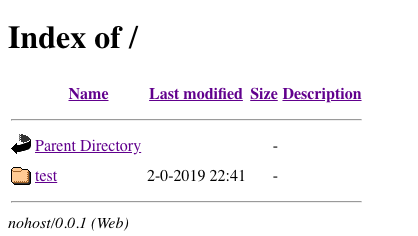

Hosting user-supplied HTML without a server
Let's say you are faced with a problem like this1 in a web application: your app is actually a framework for many independent mini-apps. The framework provides some data plumbing and foundational API's for these apps, and hosts these apps in an iframe in the UI so that they will be somewhat isolated from each other.
Users need to be able to upload their apps (i.e., some arbitrary collection of HTML, JS, and CSS files) for their own use to this framework, but there is no internet connection2. Therefore, the obvious solution (uploading the files to a server and then serving them) won't work, and you have to do something similar using only browser API's.
This is the solution I ended up going with:
- Take a
.zipof the user's files from aninputelement - Install this
.zipin an in-browser "HTTP server" - Direct the
iframe'ssrcattribute to the root ofindex.htmlin the in-browser HTTP server
Clearly, all the magic's in step 2. What the heck is an in-browser HTTP server? I am referring specifically to a project named nohost. Nohost emulates a webserver (even imitating the look and feel of an Apache server's default directory browser!) by allowing the installation of arbitrary .zip files in an in-browser file system. Then, when someone asks for a file from an arbitrary directory, nohost retrieves the file from the filesystem and "serves" it.
1 An example
Let's take this simple HTML file named test.html:
<html> <head></head> <body> <p>Hello, nohost!</p> </body> </html>
Let's put it in a directory named test and put that in test.zip, then install it. The easiest way to do this is to put test.zip in the same directory as nohost's index.html file. Then, an HTTP server needs to be started at this location, and to install the zip, we then need to navigate to /index.html?install=test.zip. Now, when we navigate to /index.html?/ (i.e., to the root directory of the "HTTP server"), we should see this:

Clicking test and then test.html should show you an otherwise blank page with "Hello, nohost!" on it, as expected. Notice that this takes you to /index.html?/test/test.html.
If you're like me, after seeing this, you have at least two questions at this point:
- How is the HTTP request for the file
/index.html?/path/to/fileintercepted by nohost, instead of traveling to the server like usual? - How are dependent files (e.g. a script located at
js/test.js) loaded?
2 Request interception
The trick is that there actually is no interception. In the URL above, /index.html?/test/test.html, there is a ? after index.html (that is, nohost's index). The request is still being sent to index.html, but it is being given the path /test/test.html in the query string, and nohost knows to interpret this query string as a request for a file in its filesystem.
After the file has been retrieved, nohost replaces the content of index.html with the content of the file. The exact line, in fact, is quite simple:
function _writeMarkup(markup) { // ... document.documentElement.innerHTML = markup; }
3 Dependent files
Suppose now that we wanted to load a JavaScript file in our test HTML file. It would look something like this:
<html> <head> <script src="js/test.js"></script> </head> <body> <p>Hello, nohost!</p> </body> </html>
Uh-oh. It seems like if this file got served by nohost, using the process we just saw above, its own content will get served just fine, but this script tag will try to retrieve /js/test.js, which is not what we want. This would attempt to contact the server instead of nohost, and this file won't exist.
But nohost actually properly anticipates and handles this. The key to its solution is using the function URL.createObjectURL3. This function takes a Blob (i.e., some kind of data—it could text, a video, anything) and creates a temporary, client-local URL that points to the data. Again, the nohost source code is quite simple:
toDataURL: function(data, type) { var blob = new Blob([data], {type: type}); return URL.createObjectURL(blob); }
Indeed, if you include script tags like in the test HTML file above, you'll see that their src attribute was modified before it was served. (Nohost has also added another script tag for housekeeping.)
<html> <head> <script src="shims/nohost.js" data-nohost-watchlist="/test/test.html,/test/js/test.js"></script> <script src="blob:http://localhost:3449/3efcc237-6a58-43d8-b446-efbfc1dfb4bd"></script> </head> <body> <p>Hello, nohost!</p> </body> </html>
Now, since a blob URL was used, the data is available without an HTTP request.
Note what has to be going on behind the scenes in order for this to happen: nohost is parsing the HTML it retrieved from the filesystem and modifying it!
4 iframe compatibility
The major question I had when I considered whether nohost would work in an iframe is whether I'd be able to pass blob URL's into the iframe. It turns out that blob URL's work across iframe boundaries, at least when all the contexts have the same origin, which they do in our circumstances.
As mentioned above, the workflow in this app involves the following:
- A user selects a
.zipfile using an<input>element - The
Fileobject is collected from the<input>element, andURL.createObjectURLis invoked upon it to get a blob URL (aFileis aBlob). - The
iframe'ssrcattribute is set toindex.html?install=...where...is something likeblob:http://localhost:3449/3efcc237-6a58-43d8-b446-efbfc1dfb4bd.
What surprised me is that nohost is able to successfully read from the blob URL even though the blob URL was created in the parent window while it was being used in the child iframe window.
5 Alternatives
Some of this feels kind of rickety, and I wonder if there's a better way to do it. Coincidentally, just after I finished this work, after 5 years of no activity on nohost, its author rewrote it using Service Workers instead of the approach outlined here. I think the new approach should work with the specific constraints of this hypothetical where all this must happen within an iframe, but I haven't tested it.
Footnotes:
I am facing this problem myself—the reasons why are better explained in another post.
Aside from, obviously, the one needed to deliver the complete app framework in the first place.
It's possible that setting src to something like index.html?/js/test.js might also work, but I haven't tested it, and this is not what nohost does.